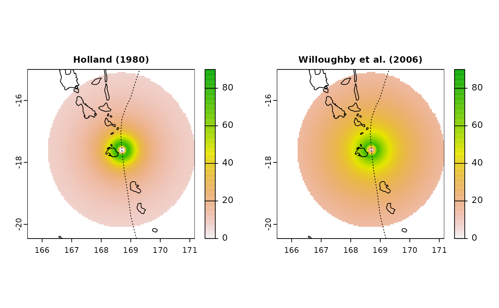
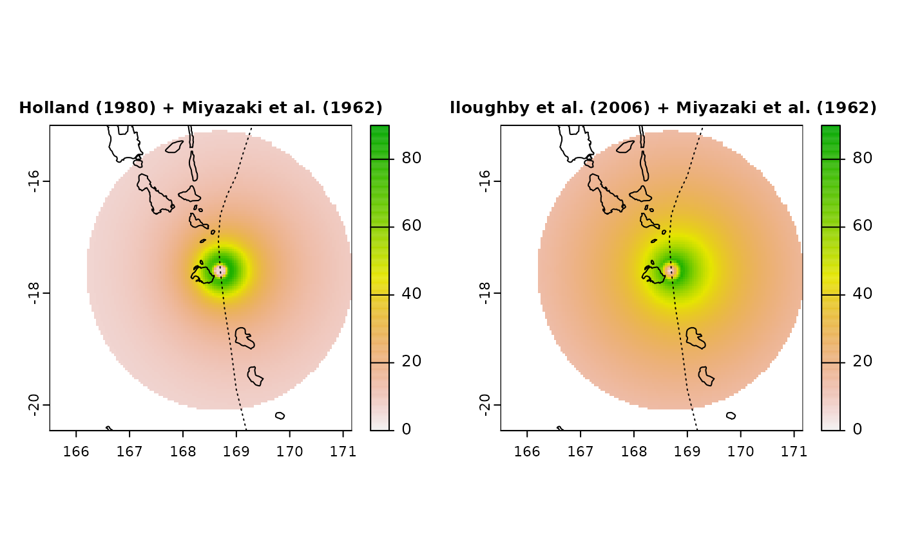
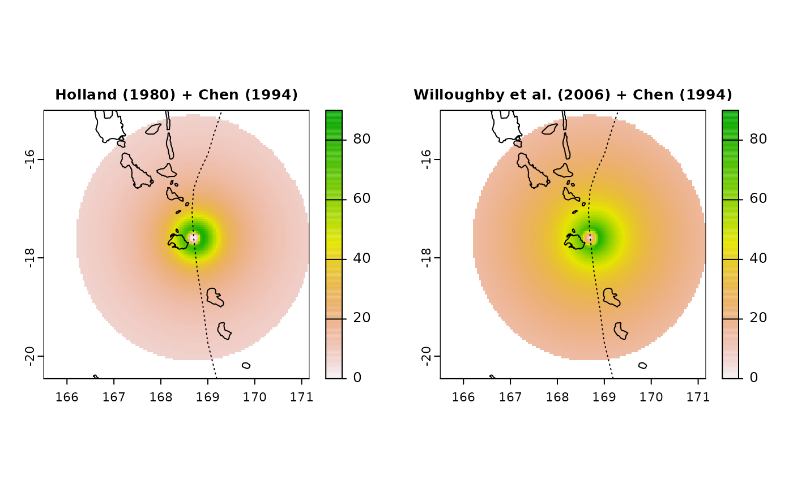
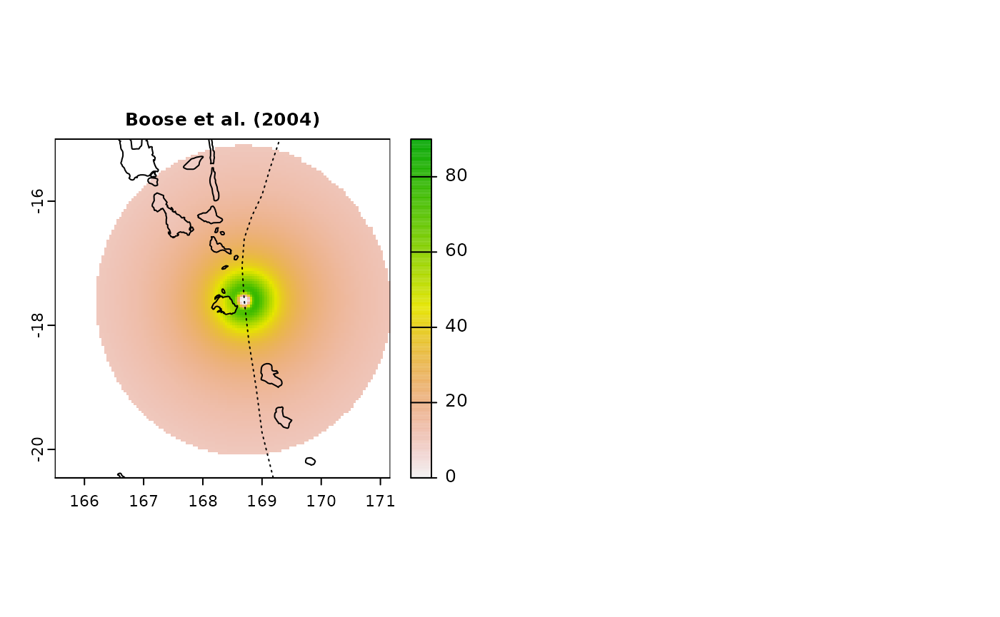

The main functions of the StormR package,
spatialBehaviour() and temporalBehaviour(),
allow to compute characteristics of the storm surface wind field, as
re-constructed from storm track data and a parametric cyclone model.
Three parametric models are implemented in this package: Holland (1980), Willoughby et al. (2006), and Boose et al. (2004). The use of one model or the other is
defined using the method argument in
spatialBehaviour() and temporalBehaviour()
functions.
The original Holland (1980) and
Willoughby et al. (2006) models
provide a symmetrical wind field around the cyclone centre. However,
cyclonic winds are not symmetric, and an order zero asymmetry is caused
by the storm translation (forward motion). We therefore suggest using an
asymmetric version of the parametric wind fields that takes into account
storm motion. In the StormR package the methods developed
by Miyazaki et al. (1962) and
Chen (1994) that allow to take this
asymmetry into account can be used to adjust the outputs of the
symmetrical models accordingly. These can be activated by using the
asymmetry argument of the spatialBehaviour()
and temporalBehaviour() functions. The model of Boose
et al. (2004) is already an
asymmetrical version of the Holland (1980)
model. Contrary to the Holland (1980) and
Willoughby et al. (2006), this
model considers different parameter settings over water or over
lands.
By default the spatialBehaviour() and
temporalBehaviour() functions use the Willoughby et
al. (2006) model adjusted using the
Chen (1994) method.
Holland (1980) symmetric wind field
The Holland model (1980), widely used in the literature, is based on the gradient wind balance in mature tropical cyclones. The wind speed distribution is computed from the circular air pressure field, which can be derived from the central and environmental pressure and the radius of maximum winds.
\[ v_r = \sqrt{\frac{b}{\rho} \times \left(\frac{R_m}{r}\right)^b \times (p_{oci} - p_c) \times e^{-\left(\frac{R_m}{r}\right)^b} + \left(\frac{r \times f}{2}\right)^2} - \left(\frac{r \times f}{2}\right) \]
with, \[ b = \frac{\rho \times e \times v_m^2}{p_{oci} - p_c} \] \[ f = 2 \times 7.29 \times 10^{-5} \sin(\phi) \]
where,
\(v_r\) is the
tangential wind speed (in \(m.s^{-1}\)),
\(b\) is the shape parameter,
\(\rho\) is the air density set to \(1.15 kg.m^{-3}\),
\(e\) is the base of natural logarithms
(~2.718282),
\(v_m\) the maximum
sustained wind speed (in \(m.s^{-1}\)),
\(p_{oci}\) is the pressure at
outermost closed isobar of the storm (in \(Pa\)),
\(p_c\) is the pressure at the centre of the
storm (in \(Pa\)),
\(r\) is the distance to the eye of the storm
(in \(km\)),
\(R_m\) is the radius of maximum sustained
wind speed (in \(km\)),
\(f\) is the Coriolis force (in \(N.kg^{-1}\)), and
\(\phi\) is the latitude.
Willoughby et al. (2006) symmetric wind field
The Willoughby et al. (2006) model is an empirical model fitted to aircraft observations. The model considers two regions: inside the eye and at external radii, for which the wind formulations use different exponents to better match observations. In this model, the wind speed increases as a power function of the radius inside the eye and decays exponentially outside the eye after a smooth polynomial transition across the eyewall (see also Willoughby (1995), Willoughby et al. (2004)).
\[ \left\{ \begin{aligned} v_r &= v_m \times \left(\frac{r}{R_m}\right)^{n} \quad if \quad r < R_m \\ v_r &= v_m \times \left((1-A) \times e^{-\frac{|r-R_m|}{X1}} + A \times e^{-\frac{|r-R_m|}{X2}}\right) \quad if \quad r \geq R_m \\ \end{aligned} \right. \]
with, \[ n = 2.1340 + 0.0077 \times v_m - 0.4522 \times \ln(R_m) - 0.0038 \times |\phi| \] \[ X1 = 287.6 - 1.942 \times v_m + 7.799 \times \ln(R_m) + 1.819 \times |\phi| \] \[ A = 0.5913 + 0.0029 \times v_m - 0.1361 \times \ln(R_m) - 0.0042 \times |\phi| \quad and \quad A\ge0 \]
where,
\(v_r\) is the
tangential wind speed (in \(m.s^{-1}\)),
\(v_m\) is the maximum sustained wind speed
(in \(m.s^{-1}\)),
\(r\) is the distance to the eye of the storm
(in \(km\)),
\(R_m\) is the radius of maximum sustained
wind speed (in \(km\)),
\(\phi\) is the latitude of the centre of the
storm, and
\(X2 = 25\).
Adding asymmetry to Holland (1980) and Willoughby et al. (2006) wind fields
The asymmetry caused by the translation of the storm can be added as follows,
\(\vec{V} = \vec{V_c} + C \times \vec{V_t}\)
where,
\(\vec{V}\) is the
combined, asymmetric wind field,
\(\vec{V_c}\) is symmetric wind field,
\(\vec{V_t}\) is the translation speed
of the storm, and
\(C\) is
function of \(r\), the distance to the
eye of the storm (in \(km\)).
Two formulations of C proposed by Miyazaki et al. (1962) and Chen (1994) are implemented.
Boose et al. (2004) asymmetric model
The Boose et al. (2004) model, or “HURRECON” model, is a modification of the Holland (1980) model (see also Boose et al. (2001)). In addition to adding asymmetry, this model treats of water and land differently, using different surface friction coefficient for each.
Wind speed
Wind speed is computed as follows,
\[ v_r = F\left(v_m - S \times (1 - \sin(T)) \times \frac{v_h}{2} \right) \times \sqrt{\left(\frac{R_m}{r}\right)^b \times e^{1 - \left(\frac{R_m}{r}\right)^b}} \]
with, \[ b = \frac{\rho \times e \times v_m^2}{p_{oci} - p_c} \]
where,
\(v_r\) is the
tangential wind speed (in \(m.s^{-1}\)),
\(F\) is a scaling parameter for friction
(\(1.0\) in water, \(0.8\) in land),
\(v_m\) is the maximum sustained wind speed
(in \(m.s^{-1}\)),
\(S\) is a scaling parameter for asymmetry
(usually set to \(1\)),
\(T\) is the oriented angle
(clockwise/counter clockwise in Northern/Southern Hemisphere) between
the forward trajectory of the storm and a radial line from the eye of
the storm to point \(r\),
\(v_h\) is the storm velocity (in \(m.s^{-1}\)),
\(R_m\) is the radius of maximum sustained
wind speed (in \(km\)),
\(r\) is the distance to the eye of the storm
(in \(km\)),
\(b\) is the shape parameter,
\(\rho = 1.15\) is the air density (in \(kg.m^{-3}\)),
\(p_{oci}\) is the pressure at outermost
closed isobar of the storm (in \(Pa\)),
and
\(p_c\) is the pressure at
the centre of the storm (\(pressure\)
in \(Pa\)).
Wind direction
Wind direction is computed as follows,
\[
\left\{
\begin{aligned}
D = A_z - 90 - I \quad if \quad \phi > 0 \quad(Northern \quad
Hemispher) \\
D = A_z - 90 - I \quad if \quad \phi \leq 0 \quad(Southern \quad
Hemispher) \\
\end{aligned}
\right.
\] where,
\(D\) is the
direction of the radial wind,
\(A_z\) is the azimuth from point r to the
eye of the storm,
\(I\) is the
cross isobar inflow angle (\(20\) in
water, \(40\) in land), and
\(\phi\) is the latitude.
Wind fields comparison
Here, we compare wind fields generated by different models that can
be used in StormR for the same time and location (tropical
cyclone Pam near Vanuatu)
sds <- defStormsDataset()## Warning in checkInputsdefStormsDataset(filename, fields, basin, seasons, : No basin argument specified. StormR will work as expected
## but cannot use basin filtering for speed-up when collecting data## === Loading data ===
## Open database... /home/runner/work/_temp/Library/StormR/extdata/test_dataset.nc opened
## Collecting data ...
## === DONE ===
st <- defStormsList(sds = sds, loi = c(168.33, -17.73), names = "PAM", verbose = 0)
PAM <- getObs(st, name = "PAM")
par(mfrow = c(1, 2))
pf <- spatialBehaviour(st, product = "Profiles", method = "Holland", asymmetry = "None", verbose = 0)
terra::plot(pf$PAM_Speed_41, main = "Holland (1980)", cex.main = 0.8, range = c(0, 90))
terra::plot(countriesHigh, add = TRUE)
lines(PAM$lon, PAM$lat, lty = 3)
pf <- spatialBehaviour(st, product = "Profiles", method = "Willoughby", asymmetry = "None", verbose = 0)
terra::plot(pf$PAM_Speed_41, main = "Willoughby et al. (2006)", cex.main = 0.8, range = c(0, 90))
terra::plot(countriesHigh, add = TRUE)
lines(PAM$lon, PAM$lat, lty = 3)
par(mfrow = c(1, 2))
pf <- spatialBehaviour(st, product = "Profiles", method = "Holland", asymmetry = "Miyazaki", verbose = 0)
terra::plot(pf$PAM_Speed_41, main = "Holland (1980) + Miyazaki et al. (1962)", cex.main = 0.8, range = c(0, 90))
terra::plot(countriesHigh, add = TRUE)
lines(PAM$lon, PAM$lat, lty = 3)
pf <- spatialBehaviour(st, product = "Profiles", method = "Willoughby", asymmetry = "Miyazaki", verbose = 0)
terra::plot(pf$PAM_Speed_41, main = "Willoughby et al. (2006) + Miyazaki et al. (1962)", cex.main = 0.8, range = c(0, 90))
terra::plot(countriesHigh, add = TRUE)
lines(PAM$lon, PAM$lat, lty = 3)
par(mfrow = c(1, 2))
pf <- spatialBehaviour(st, product = "Profiles", method = "Holland", asymmetry = "Chen", verbose = 0)
terra::plot(pf$PAM_Speed_41, main = "Holland (1980) + Chen (1994)", cex.main = 0.8, range = c(0, 90))
terra::plot(countriesHigh, add = TRUE)
lines(PAM$lon, PAM$lat, lty = 3)
pf <- spatialBehaviour(st, product = "Profiles", method = "Willoughby", asymmetry = "Chen", verbose = 0)
terra::plot(pf$PAM_Speed_41, main = "Willoughby et al. (2006) + Chen (1994)", cex.main = 0.8, range = c(0, 90))
terra::plot(countriesHigh, add = TRUE)
lines(PAM$lon, PAM$lat, lty = 3)
par(mfrow = c(1, 2))
pf <- spatialBehaviour(st, product = "Profiles", method = "Boose", verbose = 0)## Please note that 'maptools' will be retired during October 2023,
## plan transition at your earliest convenience (see
## https://r-spatial.org/r/2023/05/15/evolution4.html and earlier blogs
## for guidance);some functionality will be moved to 'sp'.
## Checking rgeos availability: FALSE
terra::plot(pf$PAM_Speed_41, main = "Boose et al. (2004)", cex.main = 0.8, range = c(0, 90))
terra::plot(countriesHigh, add = TRUE)
lines(PAM$lon, PAM$lat, lty = 3)